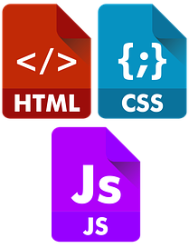
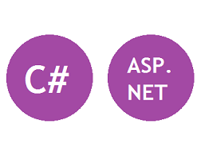

Carrie Del Signore
Full Stack Developer
Hi! I'm Carrie, an enthusiastic and budding software developer. Please take a look around!
Technical Skills
Web Development
Web Development Summary
Web development and design is what got me interested in a career as a developer. My former job position as a wildlife biologist unexpectedly tasked me with making a few updates to their website, and after a crash-course in HTML, I was hooked. Here's a few noteworthy projects:
- Use of HTML, CSS and JavaScript to create a pizza order form
- Harness Bootstrap's framework to creat a responsive login screen
- Created fictitious movie theater site
- Used Razor, JSON, JQUERY and AJAX to implement a "like"/"unlike" feature for Bewander Travel Photos website (www.bewander.com)
.NET Framework
.NET Framework Summary
I have gotten familiar with ASP.NET during my time spent with the Tech Academy in Portland, OR. A fair amount of time was spent learning C#, and from there, we were taught how to use Web Forms, as well as ASP.NET MVC. Here are some examles:
- Use Entity Framework Code First to create a mock site for plant enthusiasts. Check it out here.
- Create changesets and implement migrations for the Bewander project (www.bewander.com)
Python

Python Summary
Python is one of my favorite languages because it is so versatile, easy and fun! Here's a few projects I've completed with Python/IDLE:
- Created a file transfer app with tkinter library
- Developed an app that compares time zones to determine whether a bank branch is open or closed
- Used matplotlib and SQLite express to display and manipulate data
- Created a Harry Potter themed turn-base game
Database

Database Summary
I have a particular love for databases. When related tables are connected, they can reveal hidden trends that might not be apparent by examining each individual table by itself. I was first introduced to database work during my time as a wildlife biologist, and my skills since have only improved. Some database work includes:
- Use Microsoft Access to create and maintain a database for wildlife permits issued throughout the state of California
- Use SQL Server to create a mock library management system
- Use t-SQL to create and modify tables in Visual Studio for various apps
Version Control

Version Control Summary
Before delving into the world of software development, prior coworkers of mine and I would pass around shared documents, labeling them Version1, Version2, etc. and inevitably, someone would end up working on the wrong version at some point. When I discovered version control systems, I only wondered why we didn't use something like that in our office. These are the platforms I use:
- Work with a team using SharePoint to ensure the latest file documentation was implemented
- Collaborate with the Bewander team using Team Foundation Server
- Git/GitHub for personal use
Project Management

Project Management Summary
My time spent on a Joint Application Development team and working very closely with the developers in my previous job is what made me want to get into software. For approximately 1 1/2 years, we all attended regular meetings together, and I learned the process of Agile/Scrum by experience.
- Maintained business rule documents, participated in daily stand-up meetings as well as weekly sprint planning and review meetings for the Wildlife Incident Reporting app
- Oversaw User Acceptance Testing for the Wildlife Incident Reporting app
- Developed training materials that were distributed to all users for the Wildlife Incident Reporting app
- Work with Bewander team in Agile/Scrum environment
Portfolio
Bewander Project
Implemented the "like"/"unlike" functionality to the Travel Photos section of the site, which required AJAX/JavaScript, modifying the database, and passing data from the controller to the ViewModel, to the View.
Entity Framework Code First
Created a mock website using ASP.NET Entity Framework Code First for plant enthusiasts. The hilight of this project for me was harnessing Razor to display the correct images for each plant in the database.
Wildlife Incident Reporting Project
This assignment was my first exposure to project management. Although I didn't write any code for this project, I became familiar with Agile/Scrum methodologies by participating in daily stand-up meetings, as well as weekly sprint planning and review meetings.
Python File Transfer GUI
Designed a simple app using Python's tkinter library that checks the contents of a folder to see if any files were added to it or modified, and if so, transfers the files to a target folder.
HTML, CSS, and JavaScript
Created a mock pizza ordering site that tallies all the radio buttons and generates an order receipt on Place Order click event.
SQL Server
Used SQL Server to create a mock library relational database management system. Some of the features include tracking how many copies of a book were at a given branch, who the books were checked out to if applicable, who the publisher was, etc.